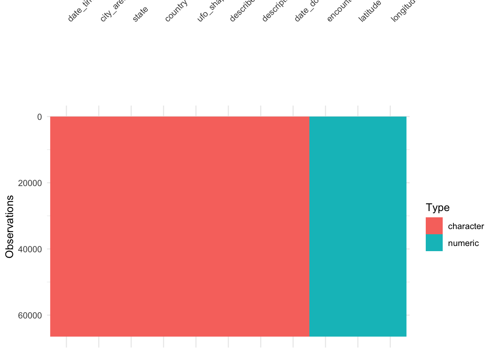
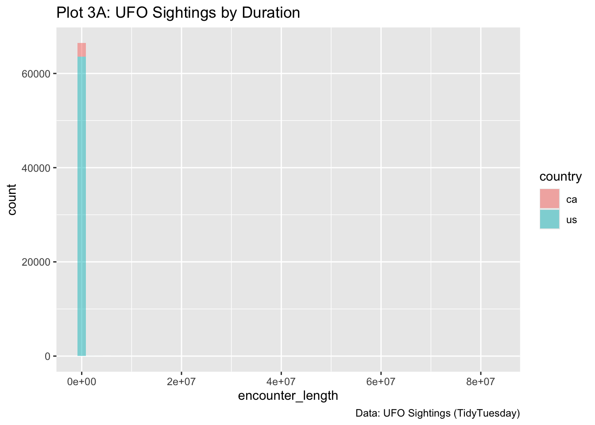
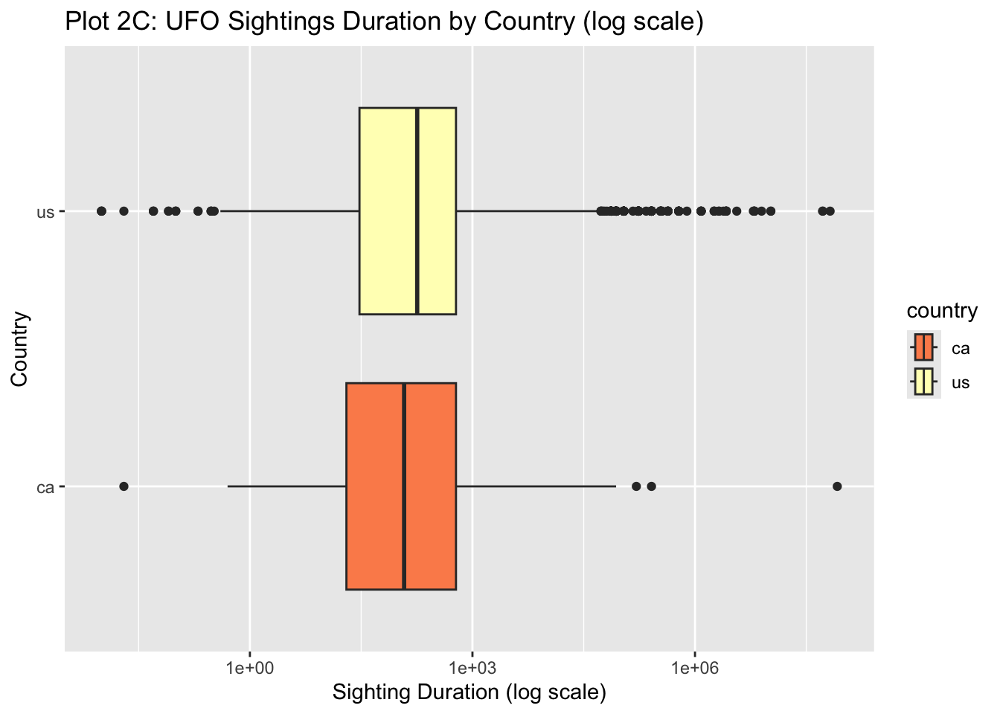
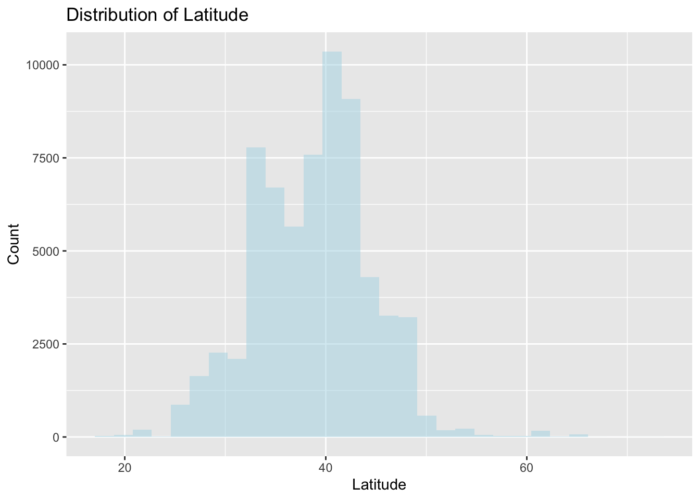
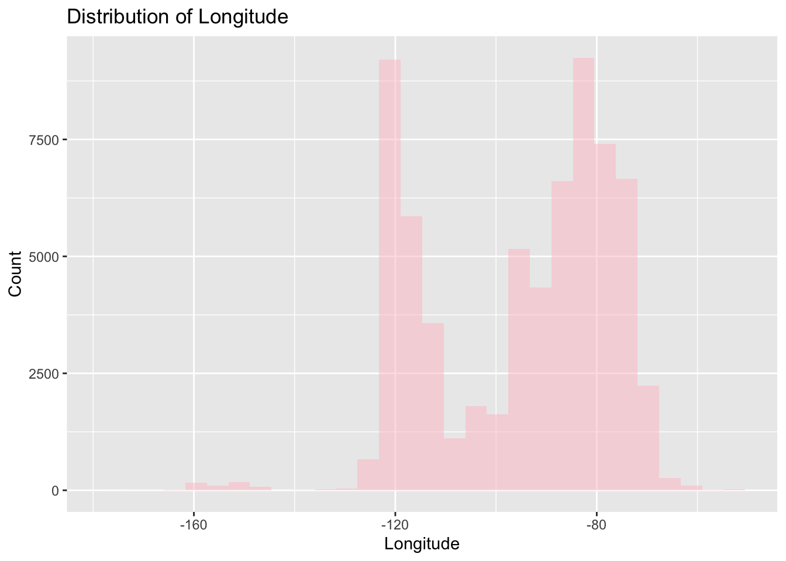

── Attaching core tidyverse packages ──────────────────────── tidyverse 2.0.0 ──
✔ dplyr 1.1.4 ✔ readr 2.1.5
✔ forcats 1.0.0 ✔ stringr 1.5.2
✔ ggplot2 4.0.0 ✔ tibble 3.3.0
✔ lubridate 1.9.4 ✔ tidyr 1.3.1
✔ purrr 1.1.0
── Conflicts ────────────────────────────────────────── tidyverse_conflicts() ──
✖ dplyr::filter() masks stats::filter()
✖ dplyr::lag() masks stats::lag()
ℹ Use the conflicted package (<http://conflicted.r-lib.org/>) to force all conflicts to become errors
library(mosaic) # Our all-in-one package
Registered S3 method overwritten by 'mosaic':
method from
fortify.SpatialPolygonsDataFrame ggplot2
The 'mosaic' package masks several functions from core packages in order to add
additional features. The original behavior of these functions should not be affected by this.
Attaching package: 'mosaic'
The following object is masked from 'package:Matrix':
mean
The following objects are masked from 'package:dplyr':
count, do, tally
The following object is masked from 'package:purrr':
cross
The following object is masked from 'package:ggplot2':
stat
The following objects are masked from 'package:stats':
binom.test, cor, cor.test, cov, fivenum, IQR, median, prop.test,
quantile, sd, t.test, var
The following objects are masked from 'package:base':
max, mean, min, prod, range, sample, sum
library(skimr) # Looking at data
Attaching package: 'skimr'
The following object is masked from 'package:mosaic':
n_missing
library(janitor) # Clean the data
Attaching package: 'janitor'
The following objects are masked from 'package:stats':
chisq.test, fisher.test
library(naniar) # Handle missing data
Attaching package: 'naniar'
The following object is masked from 'package:skimr':
n_complete
library(visdat) # Visualise missing datalibrary(tinytable) # Printing Static Tables for our data
Attaching package: 'tinytable'
The following object is masked from 'package:ggplot2':
theme_void
Rows: 80332 Columns: 11
── Column specification ────────────────────────────────────────────────────────
Delimiter: ","
chr (8): date_time, city_area, state, country, ufo_shape, described_encounte...
dbl (3): encounter_length, latitude, longitude
ℹ Use `spec()` to retrieve the full column specification for this data.
ℹ Specify the column types or set `show_col_types = FALSE` to quiet this message.
# A tibble: 80,332 × 11
date_time city_area state country ufo_shape encounter_length
<chr> <chr> <chr> <chr> <chr> <dbl>
1 10/10/1949 20:30 san marcos tx us cylinder 2700
2 10/10/1949 21:00 lackland afb tx <NA> light 7200
3 10/10/1955 17:00 chester (uk/englan… <NA> gb circle 20
4 10/10/1956 21:00 edna tx us circle 20
5 10/10/1960 20:00 kaneohe hi us light 900
6 10/10/1961 19:00 bristol tn us sphere 300
7 10/10/1965 21:00 penarth (uk/wales) <NA> gb circle 180
8 10/10/1965 23:45 norwalk ct us disk 1200
9 10/10/1966 20:00 pell city al us disk 180
10 10/10/1966 21:00 live oak fl us disk 120
# ℹ 80,322 more rows
# ℹ 5 more variables: described_encounter_length <chr>, description <chr>,
# date_documented <chr>, latitude <dbl>, longitude <dbl>
# A tibble: 66,495 × 11
date_time city_area state country ufo_shape encounter_length
<chr> <chr> <chr> <chr> <chr> <dbl>
1 10/10/1949 20:30 san marcos tx us cylinder 2700
2 10/10/1956 21:00 edna tx us circle 20
3 10/10/1960 20:00 kaneohe hi us light 900
4 10/10/1961 19:00 bristol tn us sphere 300
5 10/10/1965 23:45 norwalk ct us disk 1200
6 10/10/1966 20:00 pell city al us disk 180
7 10/10/1966 21:00 live oak fl us disk 120
8 10/10/1968 13:00 hawthorne ca us circle 300
9 10/10/1968 19:00 brevard nc us fireball 180
10 10/10/1970 16:00 bellmore ny us disk 1800
# ℹ 66,485 more rows
# ℹ 5 more variables: described_encounter_length <chr>, description <chr>,
# date_documented <chr>, latitude <dbl>, longitude <dbl>
Visualizing to check the missing Data
vis_dat(ufo_modified_clean)

Data munging
ufo_modified_munged <- ufo_modified_clean %>%mutate(date_time =as.factor(date_time),city_area =as.factor(city_area),state =as.factor(state),country =as.factor(country),ufo_shape =as.factor(ufo_shape),described_encounter_length =as.factor(described_encounter_length),description =as.factor(description),date_documented =as.factor(date_documented), ) %>%# arrange the Qual variables first, Quant next dplyr::relocate(where(is.factor))glimpse(ufo_modified_munged)
Rows: 66,495
Columns: 11
$ date_time <fct> 10/10/1949 20:30, 10/10/1956 21:00, 10/10/1…
$ city_area <fct> san marcos, edna, kaneohe, bristol, norwalk…
$ state <fct> tx, tx, hi, tn, ct, al, fl, ca, nc, ny, ky,…
$ country <fct> us, us, us, us, us, us, us, us, us, us, us,…
$ ufo_shape <fct> cylinder, circle, light, sphere, disk, disk…
$ described_encounter_length <fct> 45 minutes, 1/2 hour, 15 minutes, 5 minutes…
$ description <fct> This event took place in early fall around …
$ date_documented <fct> 4/27/2004, 1/17/2004, 1/22/2004, 4/27/2007,…
$ encounter_length <dbl> 2700, 20, 900, 300, 1200, 180, 120, 300, 18…
$ latitude <dbl> 29.88306, 28.97833, 21.41806, 36.59500, 41.…
$ longitude <dbl> -97.94111, -96.64583, -157.80361, -82.18889…
ufo_modified_munged %>%gf_histogram(~encounter_length, # histogram x-axis: duration in minutesfill =~country, # fill color by countrydata = ., # use ufo_modified datasetbins =50# adjust number of bins ) %>%gf_labs(title ="Plot 3A: UFO Sightings by Duration",caption ="Data: UFO Sightings (TidyTuesday)" )

Log Scale (Quant) Graph
ufo_modified_munged %>%gf_boxplot( country ~ encounter_length, # duration on x-axis, countries on y-axisfill =~country, # fill by countryorientation ="y" ) %>%gf_refine(scale_x_log10(), # log scale for durationscale_fill_brewer(palette ="Spectral") ) %>%gf_labs(y ="Country",x ="Sighting Duration (log scale)",title ="Plot 2C: UFO Sightings Duration by Country (log scale)" )

Quant Graph
# Histogram of Latitudegf_histogram(~latitude, data = ufo_modified_munged, bins =30, fill ="lightblue") %>%gf_labs(title ="Distribution of Latitude", x ="Latitude", y ="Count")

# Histogram of Longitudegf_histogram(~longitude, data = ufo_modified_munged, bins =30, fill ="pink") %>%gf_labs(title ="Distribution of Longitude", x ="Longitude", y ="Count")

mosaic::inspect(ufo_modified_munged)
categorical variables:
name class levels n missing
1 date_time factor 58159 66495 0
2 city_area factor 11901 66495 0
3 state factor 67 66495 0
4 country factor 2 66495 0
5 ufo_shape factor 28 66495 0
6 described_encounter_length factor 7056 66495 0
7 description factor 66240 66495 0
8 date_documented factor 316 66495 0
distribution
1 7/4/2010 22:00 (0%) ...
2 seattle (0.7%), phoenix (0.7%) ...
3 ca (13.1%), fl (5.6%), wa (5.6%) ...
4 us (95.6%), ca (4.4%)
5 light (21.2%), triangle (10.2%) ...
6 5 minutes (6.2%), 2 minutes (4.5%) ...
7 Fireball (0%) ...
8 12/12/2009 (1.9%), 10/30/2006 (1.7%) ...
quantitative variables:
name class min Q1 median Q3
1 encounter_length numeric 0.01000 30.0000 180.00000 600.00000
2 latitude numeric 17.96778 34.1975 39.24611 42.33625
3 longitude numeric -176.65806 -114.1933 -89.62000 -80.40000
max mean sd n missing
1 8.280000e+07 6573.65439 5.109715e+05 66495 0
2 7.270000e+01 38.71491 5.782819e+00 66495 0
3 -5.266667e+01 -95.34335 1.822472e+01 66495 0
skimr::skim(ufo_modified_munged)
Data summary
Name
ufo_modified_munged
Number of rows
66495
Number of columns
11
_______________________
Column type frequency:
factor
8
numeric
3
________________________
Group variables
None
Variable type: factor
skim_variable
n_missing
complete_rate
ordered
n_unique
top_counts
date_time
0
1
FALSE
58159
7/4: 31, 7/4: 29, 11/: 24, 7/4: 23
city_area
0
1
FALSE
11901
sea: 471, pho: 438, las: 356, por: 354
state
0
1
FALSE
67
ca: 8683, fl: 3754, wa: 3707, tx: 3398
country
0
1
FALSE
2
us: 63553, ca: 2942
ufo_shape
0
1
FALSE
28
lig: 14124, tri: 6815, cir: 6399, fir: 5363
described_encounter_length
0
1
FALSE
7056
5 m: 4097, 2 m: 3024, 10 : 2850, 1 m: 2555
description
0
1
FALSE
66240
Fir: 10, ((N: 8, UFO: 7, ((N: 6
date_documented
0
1
FALSE
316
12/: 1267, 10/: 1115, 11/: 1092, 10/: 991
Variable type: numeric
skim_variable
n_missing
complete_rate
mean
sd
p0
p25
p50
p75
p100
hist
encounter_length
0
1
6573.65
510971.52
0.01
30.00
180.00
600.00
8.280e+07
▇▁▁▁▁
latitude
0
1
38.71
5.78
17.97
34.20
39.25
42.34
7.270e+01
▁▇▇▁▁
longitude
0
1
-95.34
18.22
-176.66
-114.19
-89.62
-80.40
-5.267e+01
▁▁▆▇▃
dplyr::glimpse(ufo_modified_munged)
Rows: 66,495
Columns: 11
$ date_time <fct> 10/10/1949 20:30, 10/10/1956 21:00, 10/10/1…
$ city_area <fct> san marcos, edna, kaneohe, bristol, norwalk…
$ state <fct> tx, tx, hi, tn, ct, al, fl, ca, nc, ny, ky,…
$ country <fct> us, us, us, us, us, us, us, us, us, us, us,…
$ ufo_shape <fct> cylinder, circle, light, sphere, disk, disk…
$ described_encounter_length <fct> 45 minutes, 1/2 hour, 15 minutes, 5 minutes…
$ description <fct> This event took place in early fall around …
$ date_documented <fct> 4/27/2004, 1/17/2004, 1/22/2004, 4/27/2007,…
$ encounter_length <dbl> 2700, 20, 900, 300, 1200, 180, 120, 300, 18…
$ latitude <dbl> 29.88306, 28.97833, 21.41806, 36.59500, 41.…
$ longitude <dbl> -97.94111, -96.64583, -157.80361, -82.18889…